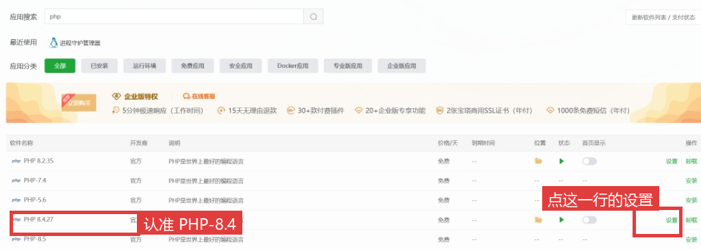
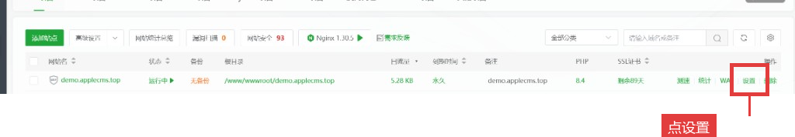
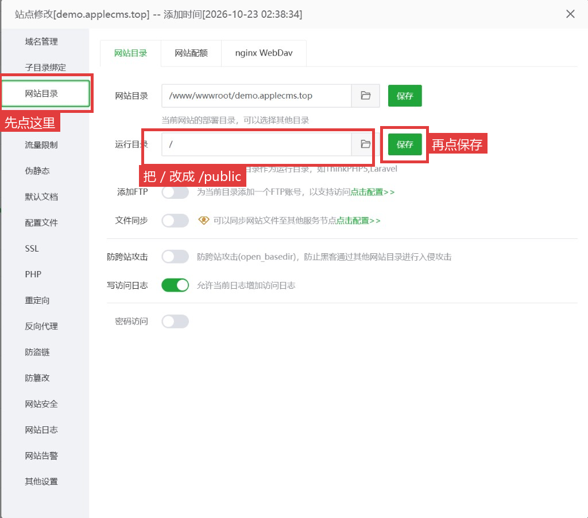
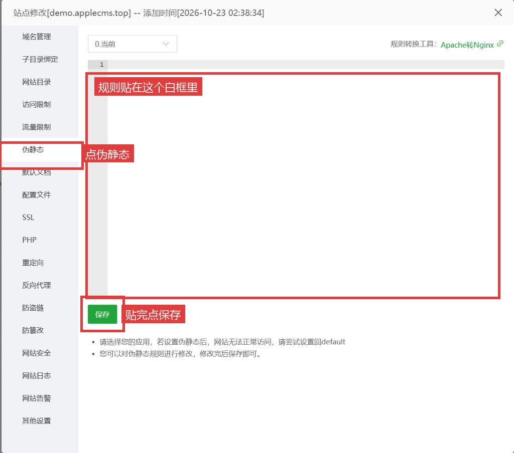

红框就是要点的地方。按顺序做完，再刷新这个网址。
宝塔左边点「软件商店」，搜索 PHP。认准 PHP-8.4。右边是「安装」就点安装；已经是「设置」，就不用再装。

顶部点「网站」，找到你的域名，右边点红框里的「设置」。

左边点「网站目录」。上面的网站目录不用改。下面的运行目录现在是 /，改成 /public，再点右边绿色「保存」。

页面上没有「运行目录」时，把网站目录末尾改成 /public，再保存。
还是这个窗口，左边点「伪静态」。把下面整段贴进白框，点绿色「保存」。
location / {
try_files $uri $uri/ /index.php?$query_string;
}

保存后再打开你的域名。这一页消失，就说明已经指对了，接着做安装。